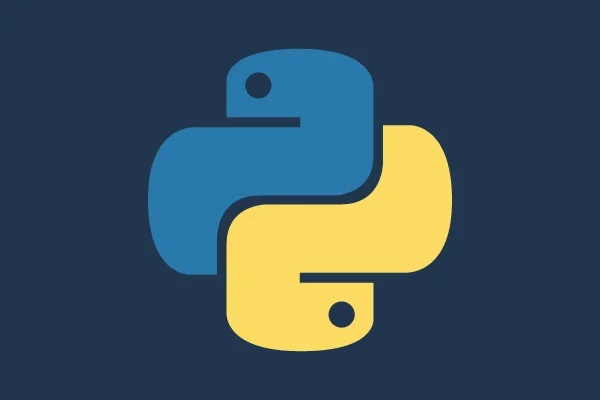

Todo sobre Python
Python es un lenguaje de programación de alto nivel, interpretado y de propósito general, que se destaca por su legibilidad y simplicidad. Fue creado por Guido van Rossum y lanzado en 1991. Python tiene un diseño de sintaxis claro y eficiente, lo que facilita su aprendizaje y lectura. Python es muy versátil y se utiliza en una amplia gama de aplicaciones, incluyendo desarrollo web, ciencia de datos, inteligencia artificial, aprendizaje automático, análisis de datos, automatización y mucho más. Python tiene una gran comunidad de desarrolladores y una extensa biblioteca de módulos y paquetes de código abierto, lo que amplía aún más sus capacidades y aplicaciones. Python es conocido por su filosofía, "The Zen of Python", que incluye principios como "La legibilidad cuenta" y "Lo explícito es mejor que lo implícito". Estos principios han guiado el desarrollo del lenguaje y han contribuido a su popularidad en la comunidad de programación.
Servicios de Programación en Python
En Infinite Soft, ofrecemos servicios de programación en Python adaptados a tus necesidades específicas. Ya sea que necesites desarrollar una aplicación web dinámica, automatizar tareas, analizar datos o construir sistemas de inteligencia artificial, nuestro equipo de expertos en Python está aquí para ayudarte a alcanzar tus objetivos.
Nuestros servicios incluyen:
- Creación de scripts personalizados para automatizar procesos.
- Análisis de datos y visualización utilizando bibliotecas como Pandas y Matplotlib.
- Desarrollo de sistemas de inteligencia artificial y machine learning con TensorFlow y PyTorch.
- Integración de Python con otras tecnologías y sistemas.
¿Por qué trabajar con nosotros?
En Infinite Soft, nos comprometemos a brindar soluciones de alta calidad y resultados excepcionales. Con años de experiencia en el desarrollo de software y un enfoque centrado en el cliente, nos aseguramos de entender tus necesidades y ofrecer soluciones que superen tus expectativas.